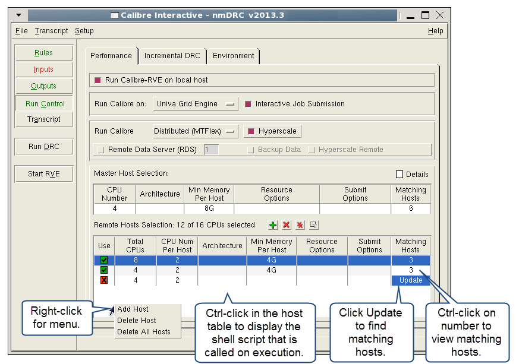

The Univa Grid
Engine is an open source batch-queuing system. For complete details
on configuring this environment, refer to the product’s documentation.
Procedure
- Click the Run Control button
on the left panel of Calibre Interactive.
- Click the Performance tab.
- Select “Univa Grid Engine”
from the “Run Calibre on” dropdown list.
- Choose the setting for “Interactive
Job Submission”:
- Select the run mode and options:
- Choose a run mode from the
dropdown list for “Run Calibre”: “Single-Threaded,” “Multi-Threaded,”
or “Distributed (MTflex).”
- Select additional execution
options. The available options depend on the setting selected for
“Run Calibre.”
In particular, for multithreaded runs, you can specify
“Synchronize Min CPUs in Host Select table” to force CPU Number
in the host selection table to be the same as the number of CPUs
specified for “Number of CPUs to use for app.”
For DRC and DFM runs, the CPU Number value is set to the greater
of the “Number of CPUs to use for app” and “for
LITHO” values.
- Use the CPU Number, Architecture,
and Memory columns to define filter criteria for hosts available
on your network. Note that CPU Number filters on the exact number
of available CPUs on each host. The Memory column filters on the
minimum amount of memory available on each host. The grid systems
use the unit bytes by default. Append a “M” to an integer value
to specify megabytes.
- Refresh the list matching
the criteria defined in Step 6 by clicking in the Matching
Hosts column below the column title. View additional information
about available hosts by right-clicking in the in the Matching Hosts
column.
- Enter options in the Resource
Options column as necessary. These options represent arguments for
the grid resource requirement switch -l.
Common resources
are given their own columns on the left side of the Primary Host Selection
table. The values can be substituted into the Resource Options cell
using variables as follows:
%c — Replace with the value
of CPU Number
%o — Replace with the value
of Architecture
%m — Replace with the value
of Memory
If you leave the Resource Options
table cell completely blank, the following substitution occurs:
-l "num_proc=%c,arch=%o,mem_total=%m"
- Enter options unrelated to
resource settings in the Submit Options column.
For multithreaded (MT) runs
only, you can use the %b parameter in the Submit Options column.
%b is substituted with the setting from “Number of CPUs to use for
<app>”
on the Run Control pane of Calibre Interactive; “All” is substituted
for %b if “Number of CPUs to use for <app>”
is “All”. The %b parameter can be used when specifying a parallel
environment so that the number of CPUs used for the job matches
what is specified for the Calibre run with the ‑turbo option.
- Choose Run Calibre options
for your job. For details refer to Table 2 in the topic “Table 2.”
- Click the Environment tab
and configure the remote options appropriate for your run. For an
example remote setup configuration, see Figure 1 in the topic “Configuring the Remote Environment”.
Examples
The following figure shows the Performance tab
for Univa Grid Engine configuration for Distributed (MTflex) operation.
Figure 1. Univa Grid Engine Configuration